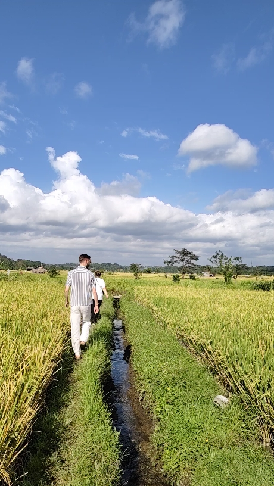
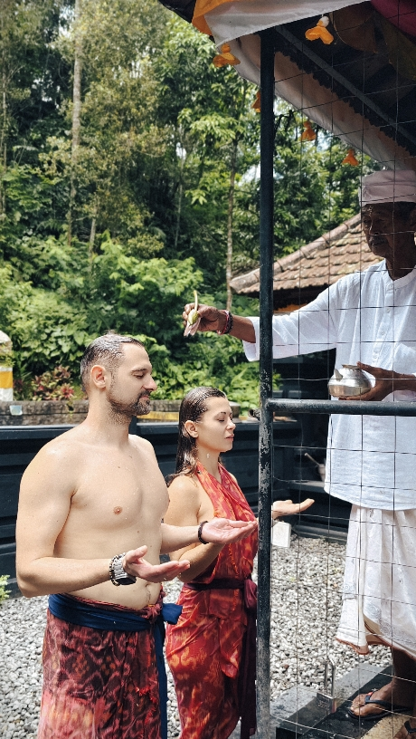
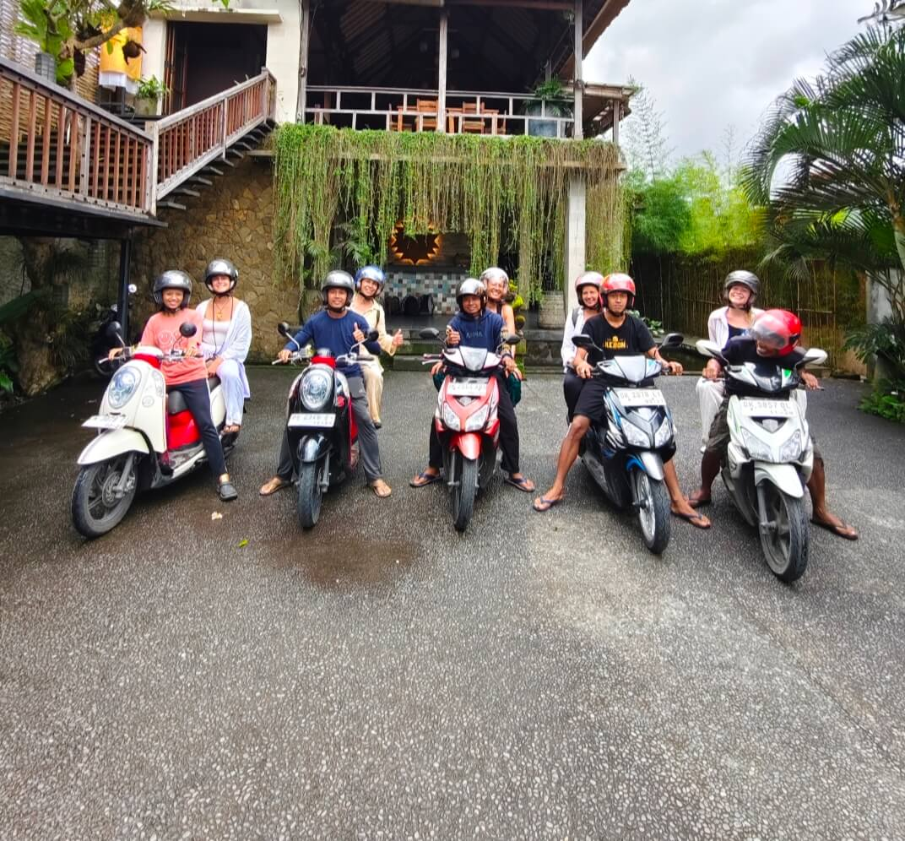

Sidemen is a beautiful part of East Bali where visitors can slow down and experience a quieter side of the island. The area is known for its green landscapes, rice fields, village life and strong connection to Balinese culture.
If you are planning a visit and wondering what to do in Sidemen, here are five experiences that can help you discover the area beyond simply passing through. These ideas combine nature, culture, local food and time with people who live here.
1. Rice Field Trekking in Sidemen

Walking through the rice fields is one of the best ways to appreciate Sidemen’s countryside. A guided walk can take you along village paths, between green rice terraces and beside irrigation canals, while offering a closer look at everyday life in the area.
With a local guide, you can learn how the landscape is connected to farming and the daily routines of local communities. The pace can be relaxed, with time to stop, enjoy the scenery and take photographs. Some paths are natural and can be muddy during the rainy or planting season, so comfortable walking shoes are recommended.
Explore trekking and private experiences with Sidemen Tour Guide →
2. Temple Purification with a Local Priest

For visitors interested in Balinese spirituality, a temple or holy-water purification experience can offer a meaningful introduction to local beliefs and practices. In Bali, purification rituals are connected with the idea of cleansing and preparing oneself spiritually.
When the experience is arranged with a local priest, guests can be guided through the ritual and learn about its meaning and respectful etiquette. It is important to approach the ceremony with an open mind and follow the guidance of the priest and local hosts. Customs and the exact ritual can vary depending on the temple and the occasion.
3. Explore the Countryside on a Guided Scooter Tour

A guided scooter tour is another way to explore the countryside around Sidemen. With a local driver or guide, visitors can discover village roads, viewpoints, waterfalls and places connected with local crafts and daily life.
Having someone local lead the journey can make it easier to find places and understand the area along the way. Routes can be discussed according to your interests and the time available. Scooter travel is best suited to guests who are comfortable with the road conditions; always use a helmet and follow local traffic rules.
4. Join an Authentic Balinese Cooking Class

Food is an important part of Balinese culture, and a cooking class is a lovely way to learn about it. In a local family home, guests can discover ingredients, herbs and spices commonly used in Balinese cooking and take part in preparing several dishes.
Rather than only tasting the finished meal, you can learn about the steps behind it and enjoy the food you have helped prepare. A home-based class also creates an opportunity to share conversation and learn about everyday life from your hosts.
5. Enjoy an Authentic Balinese Local Lunch

If you would like to experience Balinese food without joining a cooking class, enjoy a meal in a local home. At Juni’s Local House, guests can taste a variety of home-cooked Balinese dishes while the host explains the food and the ingredients used.
Sharing a meal is a simple way to connect with local hospitality and learn more about the flavours of Bali. It is also a relaxed experience for travellers who want to enjoy local food and conversation during their time in Sidemen.
Visit Juni’s Local House – Authentic Balinese Lunch in Sidemen →
Which Sidemen Experience Should You Choose?
It depends on what you enjoy most. Choose rice field trekking for nature and village scenery, a purification experience to learn about Balinese spiritual practices, or a guided scooter tour to explore more of the surrounding countryside. If food is your interest, a cooking class or a local lunch offers a welcoming introduction to Balinese home cooking.
You do not have to fit everything into one day. Take your time and choose the experiences that feel right for your visit.
Discover Sidemen with a Local Guide
Would you like help planning an authentic experience in Sidemen? Contact Sidemen Tour Guide to ask about availability and create a visit that suits your interests.
Plan Your Sidemen Experience